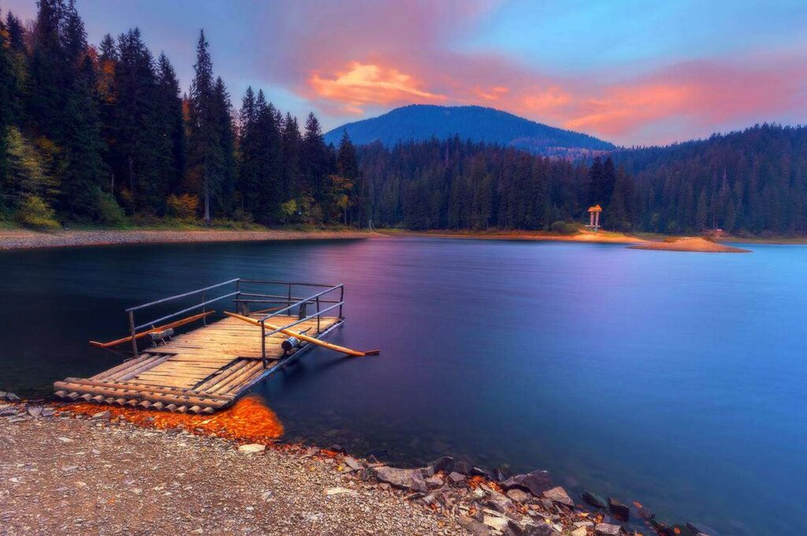
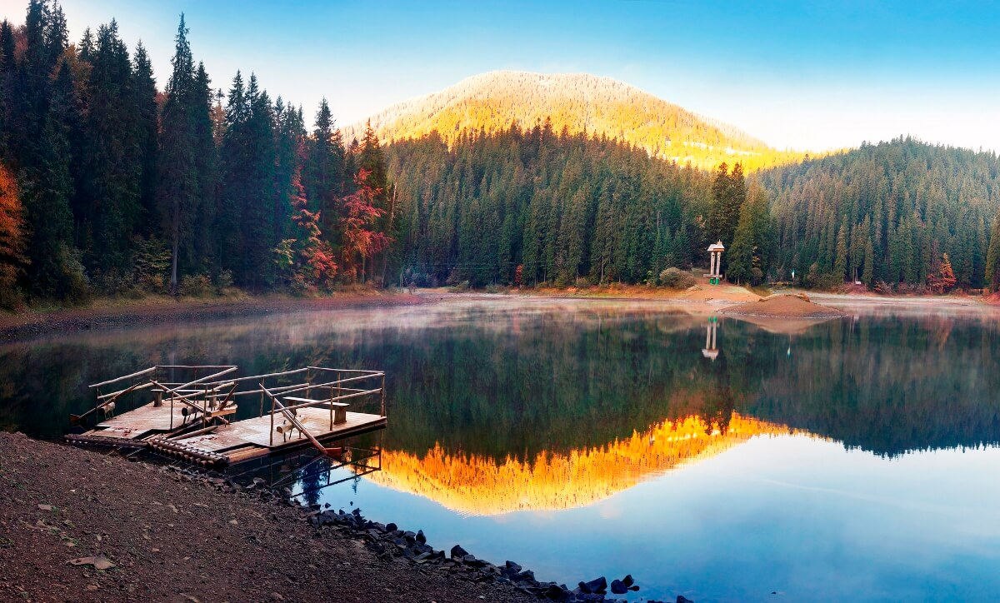

Озеро Синевир
На території Закарпаття розташоване 32 озера, але найпривабливішим і найчарівнішим вважається Синевир, яке одночасно є найбільшим і найглибшим високогірним озером України… Озеро Синевир справедливо вважається найкоштовнішим природним скарбом однойменного Національного природного парку та однією з візитних карток Українських Карпат. Розташоване воно на
висоті 989 м над рівнем моря.
Існує легенда, згідно якою мальовниче озеро утворилося від
потоку сліз графської доньки Синь, на місце, де її коханого, простого
верховинського пастуха Вира, було вбито камінною глибою за наказом
підступного графа.
Насправді ж Синевирське озеро утворилося у післяльодовиковий період,
близько 10 тисяч років тому внаслідок перекриття річкової долини
зсувами. Середня площа водного плеса становить 4-5 га, глибина озера – в
середньому 8-10 м. Проте, місцями найбільші глибини Синевиру сягають
19-22 м. Це навіть більше, аніж в Азовському морі, найглибше місце якого
– 14 м.
Синевир живиться поверхневими та атмосферними водами, з озера витікає невеликий струмок (басейн р. Тереблі). Вода – слабомінералізована, чиста, прозора. Тут водиться три види форелі – озерна, райдужна та струмкова. Проте, скупатися у Синевирі вам не вдасться: окрім заборони, не дозволить ще й температура води, яка максимально нагрівається лише до 11-13°С. Краєвиди навколо водного дзеркала – надзвичайною мальовничі та величні. Стрімкі схили, вкриті стрункими ялинами, вік яких сягає 140-160 років, спадають прямо до водної поверхні. Посередині ж озера розмістився, немов зіниця блакитного ока, невеликий острівець площею усього кілька метрів. Звідси і народна назва Синевиру – Морське око. Люди своєю творчою фантазією намагаються доповнити красу природи. Архітектори вдало вписують оглядові площадки у навколишній ландшафт. А на півострівці височить вирізана із червоного дерева скульптурна композиція місцевих майстрів-умільців «Синь і Вір». Висота монументу – 13 метрів, вага – близько 30 тон. Відображаючись у воді, він сприймається таємниче, як чудова казка про безсмертне кохання.
На Синевир приїжджають святкувати багато весіль із різних куточків Карпат. Вважається, якщо молоді люди познайомилися та покохали один одного біля цього озера, то на них чекає справжнє кохання. Недалеко від Синевирського озера, на Чорній річці, можна відвідати унікальний, єдиний у Європі Музей лісу і сплаву. Тут можна Тут можна ознайомитися зі старовинним знаряддям праці лісорубів, побачити різні побутові та житлові споруди, пройтися по греблі, милуючись чудовими краєвидами, дихаючи цілющими пахощами свіжого повітря. На території НПП «Синевир» розвідані і вивчені два з половиною десятка родовищ мінеральних вод, які лікують кишково-шлунковий тракт, опорно-руховий апарат та навіть променеву хворобу. Довкола озера активно розвивається туристична інфраструктура. Просто на березі Синевиру ви можете заночувати на турбазі, в колибі посмакувати бограчем – національним угорським супом, послухати гірських музиків, купити сувеніри і сфотографуватися на пам’ять біля опудала ведмедя на фоні озера. Працівники парку вас з радістю покатають по озеру на плотах, влаштують кінні або велосипедні екскурсії. Щорічно на березі озера проводиться Всеукраїнський фестиваль «На Синевир трембіти кличуть».
Історія утворення7 чудес України
- Києво-Печерська Лавра
- Місто Кам’янець
- Софіївка
- Софія Київська
- Херсонес Таврійський
- Хортиця
- Хотинська фортеця